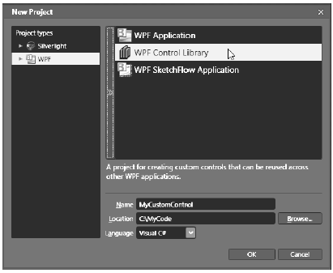
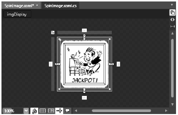
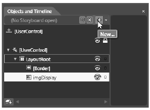
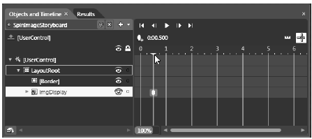
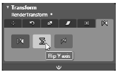
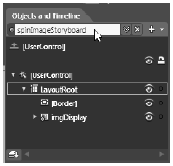
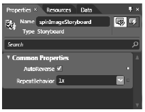
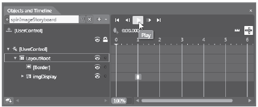
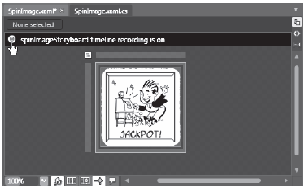
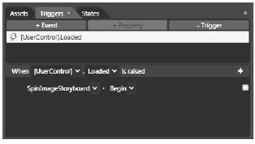

During your examination of dependency properties, you were briefly introduced to the concept of a . In some ways, a is the next logical step after a control template. Recall that when you build a control template, you are essentially applying a skin which changes the physical appearance of a WPF control. A custom , however, allows you to literally build a new class type that may contain unique members (methods, events, properties, etc.). As well, many custom s use templates and styles; however, it is also just fine if the control’s tree of markup is defined directly within the <> scope.
Recall that you can add a project item to any Visual Studio 2010 WPF application, including creating a library project, which is a *.dll that contains nothing but a collection of s to make use of across projects.
In this final section of the chapter, I will make use of Expression Blend to show you a few very interesting development techniques, including creating a new control from a geometry, working with the animation editor, and incorporating visual cues using the .NET 4.0 Visual State Manager (VSM). While going through these topics, remember that you can certainly achieve the same end result if you make use of Visual Studio 2010; it will just require more manually typing for the markup.
The goal for this final example of the chapter is to build a WPF application that represents a simple jackpot game. While you could bundle all of the logic in a new WPF executable, you will instead place your custom controls in a dedicated library project. Begin by launching Expression Blend, and from the File | New Project menu create a new WPF Control Library project named MyCustomControl (Figure 31-14).
Figure 31-14 A new Blend WPF Control Library project
This project type will provide you with an initial named MainControl. Let’s rename this control to SpinControl. To do so, begin by changing the name of the MainControl.xaml file to SpinControl.xaml via the Projects tab. Next, open the XAML editor for your initial control, and change the x:Class attribute as shown here (also, delete the x:Name attribute completely). Then, set the Height and Width of the to 150 each:
<UserControl xmlns="http://schemas.microsoft.com/winfx/2006/xaml/presentation" xmlns:x="http://schemas.microsoft.com/winfx/2006/xaml" xmlns:d="http://schemas.microsoft.com/expression/blend/2008" xmlns:mc="http://schemas.openxmlformats.org/markup-compatibility/2006" mc:Ignorable="d" x:Class="MyCustomControl.SpinControl" Width="150" Height="150"> <Grid/> </UserControl>
Last but not least, open the C# code file that is paired to your XAML document, and change the name of this class (and the constructor) to SpinControl:
public partial class SpinControl { public SpinControl() { this.InitializeComponent(); } }
Now, just for a sanity check, build your entire project just to ensure you don’t have any typos.
The purpose of the custom SpinControl is to cycle through three image files in a random manner whenever the Spin() method is called. The downloadable code for this book includes three image files (Cherries.png, Jackpot.jpg and Limes.jpg) which represent the possible images that could be displayed, so feel free to add them to your current project using the Project | Add Existing Item… menu option. When you add these images to your Blend project, they will automatically be configured to be embedded into the resulting assembly.
The visual design of the SpinControl is quite simple. Using the Assets Library, include a Border control which uses a BorderThickness value of 5, and using the Brushes editor, select a BorderBrush color of your liking. Next, place an Image control (named imgDisplay) within the Grid, and set the Stretch property to the value Fill. When you are done, the Grid should be configured similar to the following:
<Grid x:Name="LayoutRoot"> <Border BorderBrush="#FFD51919" BorderThickness="5"/> <Image x:Name="imgDisplay" Margin="8" Stretch="Fill"/> </Grid>
Finally, set the Source property of the Image control to one of your three images. Your designer should now look something like Figure 31-15.
Figure 31-15 The UI of the SpinControl
Now that the markup is complete, use the Events tab of the Blend Properties window to handle the Loaded event for your control, and specify a method named SpinControl_Loaded. In your code window, declare an array of three BitmapImage objects that are filled with the embedded binary image files when the Loaded event fires:
public partial class SpinControl { // An array of BitmapImage objects. private BitmapImage[] images = new BitmapImage[3]; public SpinControl() { this.InitializeComponent(); } private void SpinControl_Loaded(object sender, System.Windows.RoutedEventArgs e) { // Fill the ImageSource array with each image. images[0] = new BitmapImage(new Uri("Cherries.png", UriKind.Relative)); images[1] = new BitmapImage(new Uri("Jackpot.jpg", UriKind.Relative)); images[2] = new BitmapImage(new Uri("Limes.jpg", UriKind.Relative)); } }
Next, define a public method named Spin(), which is implemented to randomly show one of the three BitmapImage objects in the Image control and return the value of the random number:
public int Spin() { // Randomly put one of the images into the Image control. Random r = new Random(DateTime.Now.Millisecond); int randomNumber = r.Next(3); this.imgDisplay.Source = images[randomNumber]; return randomNumber; }
Your SpinControl is almost complete; however, to make things more visual appealing to the user, you will now use Blend to define an animation that will make the Image control appear to flip in a rotation in order to give the illusion that the graphical image has spun. You could author some C# code which preformed the animation logic; however, in this example, you will make use of the integrated animation editor of Blend to define a XAML storyboard.
Ensure that the designer of your SpinControl is the active window in your project. Now, using the Objects and Timeline editor, select your Image control, and then click on the "New Storyboard" button (Figure 31-16).
Figure 31-16 Creating a new Storyboard using Expression Blend
From the resulting dialog box, name your storyboard SpinImageStoryboard. Once you have clicked the OK button, you will notice that the Objects and Timeline editor has changed its appearance. Specifically, you’ll see a time line editor, which can be more easily viewed by pressing the F6 key to arrange the IDE into animation editor mode (press F6 again to toggle back to the previous IDE layout).
This editor allows you to capture how an object will change over units of time called keyframes. To begin, click the yellow arrow of the timeline and drag it to the 0.5 second mark. Once you have done so, click the Record Keyframe button, which is located right above the zero second mark. When you are done, your time line editor should look like Figure 31-17.
Figure 31-17 Defining a new keyframe
You will also notice that your visual editor is now in record mode, signified by the red border around the visual designer. You are free to now change any property of an object using the Properties editor. While you are making changes, these are being recorded by the IDE and are written out as XAML animation instructions. For this animation, locate the Transform editor in the Properties window of Expression Blend, and pick the Flip Y Access option (Figure 31-18).
Figure 31-18 Applying a transformation to the Image control
Now, go back to the Objects and Timeline editor, and click on your SpinImageStoryboard story board resource (Figure 31-19).
Figure 31-19 Selecting the SpinImageStoryboard for editing
Once you select a story board for editing, you can configure various settings on the storyboard itself, such as auto-reversing or repeat behaviors using the Properties editor. For your animation storyboard, click the AutoReverse checkbox (Figure 31-20).
Figure 31-20 Auto reversing your animation
At this point, you can test your animation! Just click the Play button (Figure 31-21). You should see your image flip and then reverse back to the original upright display.
Figure 31-21 Testing your animation
In summary, you have defined a simple animation which will take place over a total of 1 second (1/2 a second for the flipping of the image and an additional 1/2 a second to reverse the transformation). You can now exit the animation editor by clicking on the recording button on your visual designer (Figure 31-22).
Figure 31-22 Exiting the animation editor
Note our animation only changed a single property of a single object. Note that a storyboard can change any number of properties (for any number of objects) over various key frames. To do so, simply drag the yellow timeline to a new unit of time, click the Add Keyframe button, and change properties on the object selected in Objects and Timeline.
If you were to view the underlying XAML, you will see that Blend has added a new <Storyboard> to your 's resource dictionary:
<UserControl.Resources> <Storyboard x:Key="SpinImageStoryboard" AutoReverse="True"> <PointAnimationUsingKeyFrames BeginTime="00:00:00" Storyboard.TargetName="imgDisplay" Storyboard.TargetProperty="(UIElement.RenderTransformOrigin)"> <SplinePointKeyFrame KeyTime="00:00:01" Value="0.5,0.5"/> </PointAnimationUsingKeyFrames> <DoubleAnimationUsingKeyFrames BeginTime="00:00:00" Storyboard.TargetName="imgDisplay" Storyboard.TargetProperty= "(UIElement.RenderTransform).(TransformGroup.Children)[0] .(ScaleTransform.ScaleY)"> <SplineDoubleKeyFrame KeyTime="00:00:01" Value="-1"/> </DoubleAnimationUsingKeyFrames> </Storyboard> </UserControl.Resources>
Before you move onto the construction of the WPF Application that will make use of your custom button, you have a final task to attend to. By default, when you use the Blend animation editor, it will add a trigger that will start your storyboard when the (or Window, in the case of a WPF application project) loads into memory:
<UserControl.Triggers> <EventTrigger RoutedEvent="FrameworkElement.Loaded"> <BeginStoryboard Storyboard="{StaticResource SpinImageStoryboard}"/> </EventTrigger> </UserControl.Triggers>
You can verify this by clicking on the Triggers editor (which can be opened via the Windows menu of Expression Blend; see Figure 31-23).
Figure 31-23 Deleting the automatically added trigger
In addition to spinning when the control loads, you will also spin when the Spin() method is called. Import the System.Windows.Media.Animation namespace in your C# code file, and update your Spin() method to invoke the story board like so:
public int Spin() { // Randomly put of the images into the Image control. Random r = new Random(DateTime.Now.Millisecond); int randomNumber = r.Next(3); this.imgDisplay.Source = images[randomNumber]; // Start the storyboard animation! ((Storyboard)Resources["SpinImageStoryboard"]).Begin(); return randomNumber; }
That completes your custom control library! Go ahead and build your project to ensure you don’t have any errors. Now let’s make use of this control from within a WPF Application.
Source Code The MyCustomControl project can be found under the Chapter 31 subdirectory.